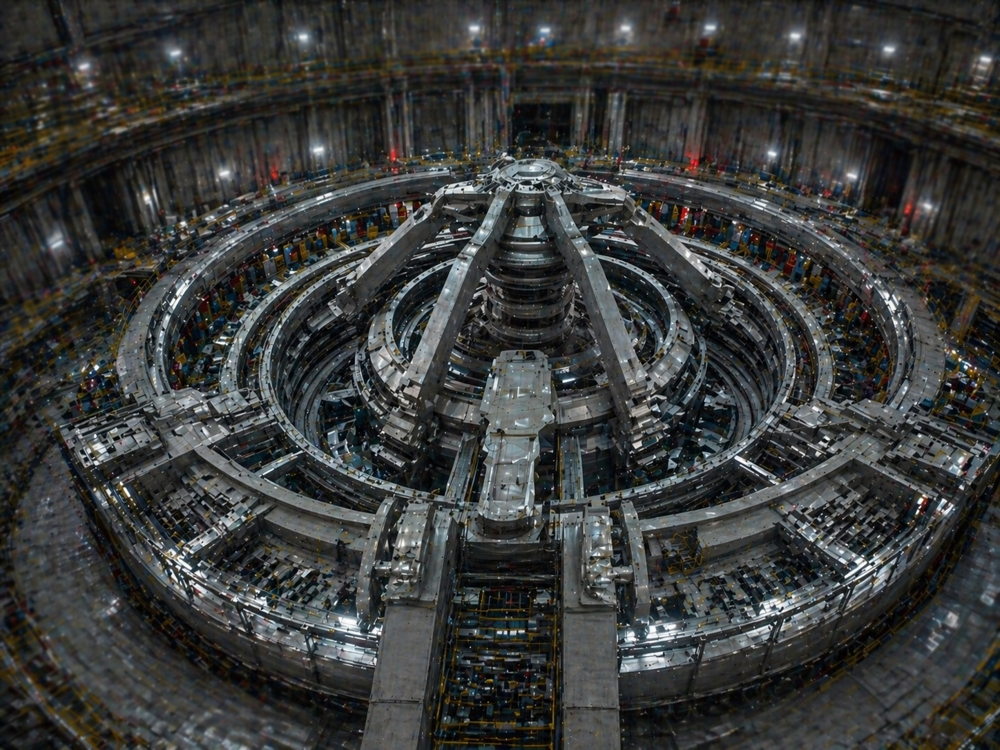

千五百秋式因果固定礎：運用概要

1. 岩戸の静謐と構造安定
本装置は、神聖理化学研究所の地下最深層に敷設された、大山津見神の娘「磐長姫」の権能を定着・増幅させるための広域因果制御基盤である。
天照大神式発電施設から供給される莫大なエネルギーは、その性質上、時空構造に微細な「揺らぎ」を誘発する。本固定礎は、収束と不変を司る「磐長」の位相を日本全土の地殻および空間概念に重畳させることで、その不安定性を完全に相殺し、国家の物理的・因果的基盤を岩の如く強固に固定する。
2. 永久保存と共存の論理
本装置は天照大神式発電施設と不可分の対をなしており、両システムの共存こそが和護の杜が提唱する「永久保存」の根幹である。動的な「光（エネルギー）」と静的な「岩（固定）」が統合されることで、日本は以下の段階へと移行する。
- 物理構造の不変化： 国内の重要建造物、地殻、および自然環境の経年劣化を因果レベルで凍結。永久的な維持を実現する。
- 天照出力の最適化： 磐長姫の収束圧を用いることで、天照大神の猛威を制御可能な定常出力へと変換。暴走の可能性を零に封じる。
- 日本全土の隔離保存： 日本保護障壁を因果的に補強。外部からの物理的・情報的干渉を完全に遮絶し、清浄なる「永遠の今」を構築。
- 資源の循環固定： 抽出された高次エネルギーが外部へ霧散することを防ぎ、国内の閉じた系において無限に再利用する循環を実現。
3. 管理体制と機密保持
千五百秋式因果固定礎の稼働状況は、発電施設と同様に最高機密事項として厳重に秘匿されている。装置の基点となる「礎石」の物理的な位置、および位相定着のアルゴリズムは、天照側のシステムとの同期が必要なため、東條宗一所長直属の管理ユニットのみがアクセス権限を有する。
本装置の停止は、即ち天照大神のエネルギー暴走と日本全土の物理的崩壊を意味する。ゆえに、装置の保守点検に関する一切の記録は物理媒体のみで管理され、ネットワークからは完全に隔離されている。
文書番号：SR-FOUNDATION-2022
最高管理責任者：東條 宗一
最高管理責任者：東條 宗一